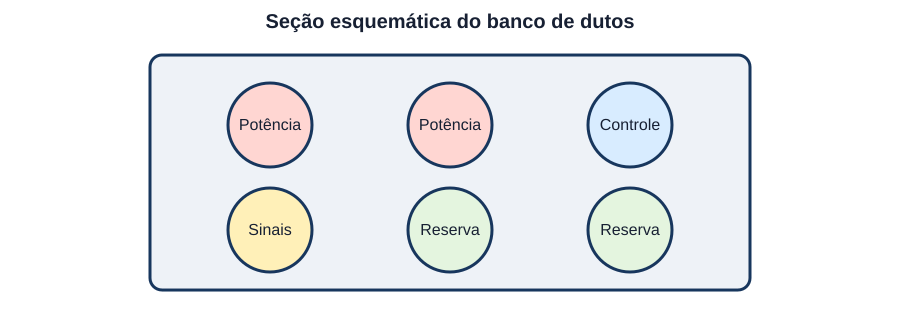
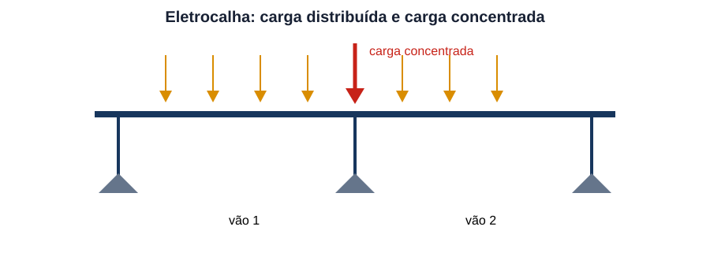
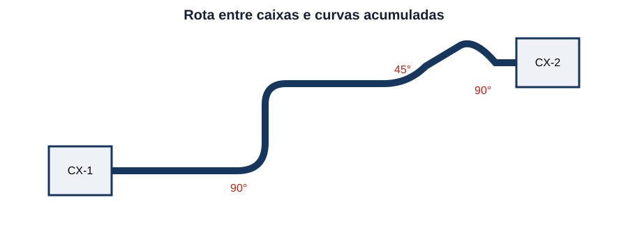
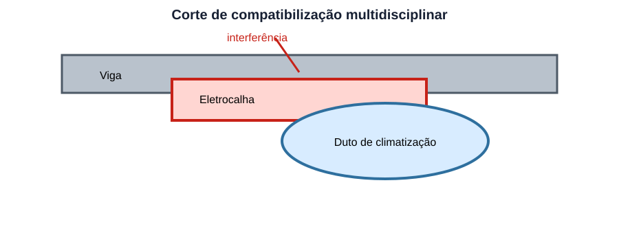
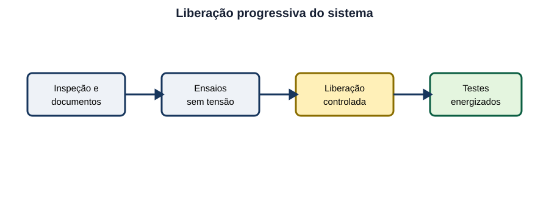

Obras de Infraestrutura Elétrica & Projetos
25 questões autorais calibradas pelo padrão IDECAN • Bloco Prata
| Questão 01 | Levantamento de Campo • Confiabilidade dos Dados |
Durante o levantamento para ampliar a alimentação elétrica de um prédio público, a planta cadastral indica uma rede subterrânea em posição diferente daquela sugerida por caixas existentes e marcas no piso. Antes de definir a nova rota, a conduta tecnicamente mais adequada é:
A) adotar integralmente a planta cadastral, pois documentos existentes prevalecem sobre indícios encontrados em campo.
B) realizar detecção, inspeções e sondagens controladas, registrar coordenadas e atualizar a base antes do projeto executivo.
C) definir a rota pela menor distância geométrica e transferir a verificação das interferências para a equipe de execução.
D) desconsiderar a infraestrutura existente e prever escavação manual contínua em toda a área disponível.
Gabarito Comentado: Alternativa B
Cadastro existente é fonte de informação, mas não prova a posição real de uma utilidade enterrada. A divergência exige investigação compatível com o risco, por detecção, abertura de caixas e sondagens controladas, seguida de registro e atualização da base de projeto. Projetar sem resolver a incerteza transfere risco de acidente, retrabalho e aditivo para a obra.
Análise das armadilhas:A armadilha é tratar desenho cadastral como levantamento definitivo.Como pensar nesta questão:Quando campo e documento divergem, primeiro reduza a incerteza; depois congele a rota executiva.
| Questão 02 | Documentação de Projeto • Compatibilização |
Em um projeto executivo, o diagrama unifilar especifica disjuntor de $250\,A$, o quadro de cargas indica demanda de $180\,A$ e a lista de materiais registra disjuntor de $160\,A$. Qual providência deve anteceder a compra?
A) comprar o equipamento de $250\,A$, pois o maior valor sempre assegura proteção e seletividade.
B) comprar o equipamento de $160\,A$, pois a lista de materiais é o documento utilizado pelo setor de suprimentos.
C) adquirir ambos os disjuntores e decidir durante o comissionamento qual deles produz menor queda de tensão.
D) emitir consulta técnica, verificar cabos, demanda, curto-circuito e coordenação, e formalizar uma revisão coerente dos documentos.
Gabarito Comentado: Alternativa D
A divergência afeta proteção, capacidade dos condutores e aquisição. Nenhum documento deve ser escolhido isoladamente. A equipe deve rastrear a premissa correta, recalcular os critérios pertinentes e emitir revisão formal que alinhe unifilar, memória, quadro de cargas, especificação e lista de materiais.
Análise das armadilhas:Valores conflitantes pedem reconciliação técnica e documental.Como pensar nesta questão:O maior disjuntor não é automaticamente seguro, porque pode deixar o cabo sem proteção adequada.
| Questão 03 | Eletrodutos • Taxa de Ocupação |
Quatro cabos de mesmo diâmetro externo, $28\,mm$, serão instalados em eletroduto de diâmetro interno $100\,mm$. Desprezando folgas entre cabos e usando a razão das áreas circulares, qual ocupação geométrica aproximada resulta?
A) $31{,}4\%$.
B) $28{,}0\%$.
C) $19{,}6\%$.
D) $39{,}2\%$.
Gabarito Comentado: Alternativa A
Como o fator $\pi/4$ aparece tanto nos cabos quanto no eletroduto, a razão é $4\cdot28^2/100^2=0{,}3136$, ou $31{,}4\%$. O cálculo geométrico é apenas uma etapa: limites normativos, curvaturas, esforço de puxamento e possibilidade de expansão também devem ser verificados.
Análise das armadilhas:Não divida diâmetros diretamente.Como pensar nesta questão:Para ocupação, use áreas, que variam com o quadrado do diâmetro, e some a área de todos os cabos.
| Questão 04 | Valas Técnicas • Quantitativos |
Uma vala para banco de dutos possui $120\,m$ de comprimento, $0{,}60\,m$ de largura e $0{,}90\,m$ de profundidade média. Se o orçamento acrescenta $12\%$ ao volume geométrico para irregularidades e manejo do material, qual volume deve ser considerado?
A) $64{,}80\,m^3$.
B) $84{,}67\,m^3$.
C) $77{,}76\,m^3$.
D) $72{,}58\,m^3$.
Gabarito Comentado: Alternativa D
O volume geométrico é $120\cdot0{,}60\cdot0{,}90=64{,}80\,m^3$. Aplicando o acréscimo: $64{,}80\cdot1{,}12=72{,}576\,m^3$, ou $72{,}58\,m^3$. O percentual incide sobre o volume, não sobre uma única dimensão.
Análise das armadilhas:Calcule primeiro o sólido geométrico.Como pensar nesta questão:Só depois aplique perdas, empolamento ou margem exatamente conforme definido no enunciado.
| Questão 05 | Banco de Dutos • Reserva e Segregação |
A seção esquemática mostra circuitos de potência, controle e dois dutos de reserva.

Para reduzir interferência, facilitar manutenção e preservar expansão, qual decisão é mais coerente?A) misturar potência e sinais no mesmo duto para igualar a ocupação e deixar os dutos de reserva permanentemente abertos.
B) segregar funções conforme compatibilidade, identificar extremidades e manter reservas tamponadas e passáveis.
C) usar um duto de reserva como dreno e lançar cabos de controle junto aos alimentadores para reduzir o comprimento.
D) agrupar todos os cabos no nível superior, pois a posição física elimina a necessidade de identificação dos circuitos.
Gabarito Comentado: Alternativa B
A segregação reduz acoplamento e facilita intervenção. Dutos de reserva devem permanecer limpos, vedados contra ingresso de água e detritos, identificados e providos de meio de puxamento. Usar reserva como dreno elimina sua finalidade e pode levar umidade à infraestrutura elétrica.
Análise das armadilhas:A armadilha é maximizar ocupação imediata.Como pensar nesta questão:Infraestrutura bem projetada também considera compatibilidade eletromagnética, manutenção e expansão futura.
| Questão 06 | Alimentadores • Queda de Tensão Trifásica |
Um alimentador trifásico de $380\,V$ conduz $150\,A$ por $120\,m$. Por fase, $R=0{,}15\,\Omega/km$ e $X=0{,}08\,\Omega/km$; o fator de potência é $0{,}85$ indutivo. Usando $\Delta V=\sqrt3IL(R\cos\varphi+X\sin\varphi)$, qual queda percentual aproximada?
A) $0{,}82\%$.
B) $3{,}17\%$.
C) $2{,}41\%$.
D) $1{,}39\%$.
Gabarito Comentado: Alternativa D
Com $L=0{,}12\,km$ e $\sin\varphi=\sqrt{1-0{,}85^2}\approx0{,}527$, obtém-se $\Delta V\approx\sqrt3\cdot150\cdot0{,}12(0{,}15\cdot0{,}85+0{,}08\cdot0{,}527)=5{,}29\,V$. Logo, $100\Delta V/380\approx1{,}39\%$.
Análise das armadilhas:Converta o comprimento para a unidade de $R$ e $X$ e não descarte a parcela reativa.Como pensar nesta questão:Ao final, transforme volts em percentual pela tensão de linha.
| Questão 07 | Eletrocalhas • Carregamento dos Suportes |
Uma eletrocalha e seus cabos produzem carga uniformemente distribuída de $40\,kgf/m$ entre suportes espaçados de $2\,m$. Para um trecho simplesmente apoiado, cada suporte recebe metade da carga de um vão. Aplicando fator de projeto $1{,}5$, qual reação de cálculo por suporte?
A) $60\,kgf$.
B) $40\,kgf$.
C) $30\,kgf$.
D) $120\,kgf$.
Gabarito Comentado: Alternativa A
A carga do vão é $40\cdot2=80\,kgf$. Cada apoio recebe $80/2=40\,kgf$. Com fator $1{,}5$, a reação de cálculo é $60\,kgf$. A seleção real ainda verifica capacidade do suporte, fixadores, substrato e cargas concentradas.
Análise das armadilhas:Não aplique o fator antes de entender a área tributária do apoio.Como pensar nesta questão:Em vão simples uniforme, cada extremidade recebe metade da carga total do vão.
| Questão 08 | Eletrocalhas • Distribuição de Carga |
A figura representa dois vãos de eletrocalha e uma carga concentrada próxima ao apoio central.

Qual verificação evita uma especificação enganosa baseada apenas em $kg/m$?A) considerar somente o peso próprio da eletrocalha, pois acessórios não transferem esforço aos suportes.
B) converter toda carga concentrada em potência elétrica e compará-la com a corrente nominal dos cabos.
C) somar cargas distribuídas e concentradas, avaliar reações, momento, flecha, fixadores e resistência do substrato.
D) dividir a carga total pelo número de circuitos, independentemente da posição dos equipamentos apoiados.
Gabarito Comentado: Alternativa C
A capacidade por metro pressupõe distribuição e espaçamento definidos. Emendas, caixas ou cabos agrupados podem introduzir cargas concentradas e alterar reações e deformações. Também é necessário verificar o conjunto suporte-fixador-substrato, não apenas o perfil metálico.
Análise das armadilhas:Quando houver desenho estrutural, observe onde a carga atua.Como pensar nesta questão:Mesma massa total pode produzir esforços diferentes conforme posição e vão.
| Questão 09 | Dilatação Térmica • Juntas |
Um trecho retilíneo de eletrocalha de aço possui $40\,m$. Para coeficiente de dilatação $12\times10^{-6}/^\circ C$ e variação térmica de $50^\circ C$, qual movimentação longitudinal deve ser acomodada?
A) $12\,mm$.
B) $20\,mm$.
C) $30\,mm$.
D) $24\,mm$.
Gabarito Comentado: Alternativa D
$\Delta L=\alpha L\Delta T=12\times10^{-6}\cdot40\cdot50=0{,}024\,m=24\,mm$. Trechos longos exigem avaliação de juntas, fixos e guias para que a dilatação não sobrecarregue conexões ou equipamentos.
Análise das armadilhas:Mantenha coerência de unidades e converta o resultado final para milímetros.Como pensar nesta questão:A movimentação depende simultaneamente de material, comprimento e faixa térmica.
| Questão 10 | Invólucros • Graus de Proteção |
Um painel será instalado em área externa sujeita a chuva dirigida e impactos mecânicos ocasionais. A especificação deve distinguir IP e IK porque:
A) IP trata resistência mecânica e IK trata exclusivamente corrosão atmosférica.
B) IP e IK medem a mesma característica, mas um é aplicado a painéis e o outro somente a luminárias.
C) IP descreve acesso e ingresso de sólidos/água, enquanto IK classifica resistência a impacto mecânico.
D) IK substitui qualquer avaliação de vedação quando o invólucro é fabricado em material metálico.
Gabarito Comentado: Alternativa C
O código IP está relacionado à proteção contra acesso a partes perigosas e ingresso de corpos sólidos e água. O código IK trata energia de impacto mecânico suportada pelo invólucro. Ambiente externo pode exigir avaliação simultânea, além de corrosão, radiação solar e condensação.
Análise das armadilhas:Não escolha um número alto sem identificar o agente.Como pensar nesta questão:Água, poeira, impacto e corrosão são mecanismos diferentes e podem exigir requisitos independentes.
| Questão 11 | Puxamento de Cabos • Pressão Lateral |
Em uma curva de eletroduto, a tensão de puxamento do conjunto é $2{,}0\,kN$ e o raio interno efetivo é $0{,}80\,m$. Usando pressão lateral aproximada $P=T/R$, qual valor resulta?
A) $2{,}50\,kN/m$.
B) $1{,}60\,kN/m$.
C) $1{,}25\,kN/m$.
D) $3{,}60\,kN/m$.
Gabarito Comentado: Alternativa A
$P=2{,}0/0{,}80=2{,}50\,kN/m$. Mesmo com tensão axial admissível, raio pequeno pode produzir pressão lateral excessiva e danificar o cabo. Por isso, tensão, raio, coeficiente de atrito e sequência de curvas devem ser analisados em conjunto.
Análise das armadilhas:Aumentar o raio reduz a pressão para a mesma tensão.Como pensar nesta questão:Não confunda limite de tração do cabo com limite de esforço lateral na curva.
| Questão 12 | Puxamento de Cabos • Curvas Acumuladas |
Uma rota entre caixas possui curvas de $90^\circ$, $45^\circ$ e $90^\circ$, conforme a figura.

Se a análise indicar tensão final excessiva, a melhor revisão é:A) reduzir o diâmetro do eletroduto para apoiar os cabos e impedir deslocamentos durante o puxamento.
B) dividir o trecho com caixa de passagem adequadamente posicionada e recalcular cada lance de puxamento.
C) aumentar o número de curvas curtas, distribuindo o atrito igualmente ao longo do percurso.
D) manter a rota e aumentar a força do guincho até que o cabo ultrapasse todas as curvas.
Gabarito Comentado: Alternativa B
As curvas acumulam atrito e podem elevar muito a tensão de puxamento. Uma caixa corretamente dimensionada e acessível pode dividir a instalação em lances controláveis, respeitando raios e espaços de acomodação. A força do equipamento não torna o cabo mais resistente.
Análise das armadilhas:A armadilha é tratar capacidade do guincho como critério de aceitação.Como pensar nesta questão:O limite relevante é o esforço admissível no cabo e nas curvas.
| Questão 13 | Passagens entre Compartimentos • Selagem |
Uma eletrocalha atravessa uma parede com requisito de resistência ao fogo. Após a passagem dos cabos, o tratamento correto da abertura deve:
A) recompor o desempenho requerido com sistema de selagem compatível, identificado e instalável para a configuração ensaiada.
B) ser preenchido apenas com argamassa comum, independentemente do tipo e da quantidade de cabos.
C) permanecer aberto para ventilação dos cabos, desde que exista detector de fumaça no recinto.
D) receber espuma expansiva de uso geral, pois qualquer produto celular possui o mesmo desempenho ao fogo.
Gabarito Comentado: Alternativa A
A penetração pode comprometer a compartimentação. A solução deve ser um sistema de selagem compatível com parede, abertura, suporte e cabos, instalado conforme sua aplicação e devidamente documentado. Materiais genéricos não garantem resistência ao fogo nem comportamento de fumaça.
Análise das armadilhas:Em atravessamentos, pense no desempenho que a parede possuía antes do furo.Como pensar nesta questão:A intervenção precisa restabelecê-lo de modo verificável.
| Questão 14 | Bases de Equipamentos • Interface Civil-Elétrica |
Antes de posicionar um transformador sobre base de concreto, a equipe encontra chumbadores deslocados, cota superior fora de nível e eletrodutos emergindo sobre a área dos radiadores. A decisão adequada é:
A) forçar o posicionamento do equipamento e corrigir o alinhamento com aperto desigual dos chumbadores.
B) cortar os eletrodutos e executar emendas sob a base, deixando o registro para o desenho as built.
C) suspender a montagem, conferir desenhos e tolerâncias e aprovar solução de correção antes do assentamento.
D) aceitar o desnível se o centro de massa permanecer dentro do perímetro geométrico da fundação.
Gabarito Comentado: Alternativa C
As não conformidades afetam estabilidade, ventilação, esforços nos terminais e manutenção. A montagem deve aguardar avaliação conjunta das disciplinas e solução aprovada. Correções improvisadas podem transferir esforços ao tanque, comprometer ancoragem e ocultar emendas inacessíveis.
Análise das armadilhas:Quando a interface civil não corresponde ao equipamento, não use o próprio equipamento como gabarito de correção.Como pensar nesta questão:Resolva geometria, tolerâncias e acessos antes da montagem.
| Questão 15 | Subestações • Implantação Civil |
No estudo de implantação de uma subestação abrigada, o terreno apresenta risco de entrada de água superficial. Qual conjunto de medidas ataca diretamente o problema sem criar nova condição insegura?
A) rebaixar o piso interno e conduzir toda a drenagem para canaletas de cabos abertas.
B) elevar cotas críticas, definir drenagem independente, vedar entradas e preservar acessos e ventilação previstos.
C) fechar permanentemente aberturas de ventilação e instalar bombas portáteis dentro das celas elétricas.
D) inclinar o piso para os painéis, concentrando a água em região visível durante as inspeções.
Gabarito Comentado: Alternativa B
A implantação deve impedir que água superficial alcance áreas elétricas, por cotas, caimentos, drenagem e vedação compatíveis. As medidas não podem bloquear ventilação, fuga, operação ou manutenção. Canaletas de cabos não devem ser transformadas automaticamente em sistema de drenagem.
Análise das armadilhas:Avalie a água desde a origem até o destino.Como pensar nesta questão:Uma solução local que apenas desloca o acúmulo para cabos ou painéis não resolve o risco.
| Questão 16 | Especificação Técnica • Equivalência |
Uma proposta oferece equipamento de fabricante diferente do especificado, com mesma tensão e corrente nominais, mas sem dados de suportabilidade a curto-circuito, perdas e comunicação. Para analisar equivalência técnica, deve-se:
A) aceitar, pois tensão e corrente nominais bastam para estabelecer equivalência funcional.
B) rejeitar automaticamente qualquer fabricante alternativo, mesmo que o edital admita equivalentes.
C) comparar somente o preço final e transferir a validação técnica para depois da energização.
D) comparar todos os requisitos funcionais, elétricos, ambientais, de interface, ensaio e documentação definidos no projeto.
Gabarito Comentado: Alternativa D
Equivalência não é identidade de dois valores de placa. Deve abranger desempenho, suportabilidade, perdas, protocolos, dimensões, condições ambientais, ensaios, manutenção e documentação exigida. Ausência de dado crítico impede concluir equivalência sem diligência.
Análise das armadilhas:Monte uma matriz requisito versus evidência.Como pensar nesta questão:A alternativa só é equivalente quando atende ao conjunto de critérios, não quando coincide em duas grandezas.
| Questão 17 | Compatibilização BIM • Detecção de Interferências |
O corte coordenado mostra uma eletrocalha atravessando a faixa ocupada por uma viga e por um duto de climatização.

Antes da execução, a compatibilização deve:A) resolver a interferência entre disciplinas, preservando estrutura, acessibilidade, raios, suportação e cotas livres.
B) aprovar a passagem pela viga desde que o furo seja realizado após a concretagem e registrado em fotografia.
C) manter todos os elementos e reduzir localmente a altura da eletrocalha sem verificar ocupação ou raio dos cabos.
D) atribuir prioridade automática à disciplina elétrica, pois cabos não podem sofrer qualquer mudança de rota.
Gabarito Comentado: Alternativa A
Detecção de conflito apenas identifica a colisão. A solução deve ser coordenada, respeitando restrições estruturais, manutenção, capacidade da infraestrutura, curvaturas e espaços mínimos. A disciplina com maior rigidez geométrica pode orientar a revisão, mas não existe prioridade automática universal.
Análise das armadilhas:Em compatibilização, procure uma solução construtível e verificável.Como pensar nesta questão:Mover uma linha no modelo sem checar acesso, suporte e desempenho apenas transfere o conflito.
| Questão 18 | Controle de Alterações • Rastreabilidade |
Durante a obra, a contratada propõe deslocar um quadro em $6\,m$ para evitar interferência. A mudança afeta comprimento dos alimentadores, queda de tensão e acesso. O fluxo documental adequado é:
A) executar imediatamente e registrar a nova posição apenas no relatório mensal para não interromper o cronograma.
B) alterar somente a planta de arquitetura, pois os cálculos elétricos permanecem válidos para qualquer posição do quadro.
C) formalizar a consulta, avaliar impactos técnicos e contratuais, aprovar a solução e atualizar documentos controlados.
D) solicitar autorização verbal à fiscalização e manter a revisão anterior como documento válido de campo.
Gabarito Comentado: Alternativa C
A alteração pode modificar quantitativos, proteção, queda de tensão, operação e custo. Deve ser tecnicamente avaliada, aprovada por responsáveis competentes e incorporada aos documentos controlados antes ou conforme procedimento autorizado de execução. Registro tardio não substitui aprovação.
Análise das armadilhas:Pergunte quais consequências a mudança produz.Como pensar nesta questão:Se ela altera cálculo, quantidade, interface ou acesso, precisa de análise multidisciplinar e rastreabilidade.
| Questão 19 | Recebimento de Materiais • Inspeção |
Chega à obra um lote de cabos com bitola e tensão nominal aparentemente corretas, mas parte das bobinas não possui identificação legível nem certificado rastreável. A inspeção de recebimento deve:
A) segregar o material, registrar a não conformidade e liberar apenas após comprovação de atendimento e rastreabilidade.
B) liberar as bobinas sem identificação usando como evidência o peso aproximado e a cor externa do isolamento.
C) instalar primeiro os cabos sem identificação em trechos ocultos, reservando os identificados para áreas aparentes.
D) substituir as etiquetas em campo com dados estimados a partir do pedido de compra, sem consultar o fabricante.
Gabarito Comentado: Alternativa A
Identificação e rastreabilidade vinculam o produto às características e aos ensaios declarados. Material sem evidência suficiente deve ser segregado para impedir uso acidental, com registro e tratamento formal. Aparência ou peso não comprovam integralmente conformidade.
Análise das armadilhas:Recebimento não é apenas contagem.Como pensar nesta questão:Verifique correspondência entre material físico, documentos, certificados, condição de transporte e especificação aprovada.
| Questão 20 | Ensaios FAT e SAT • Responsabilidades |
Um painel de automação é submetido a ensaio funcional na fábrica e, depois de instalado, deve ser integrado a sensores, rede e atuadores reais. A relação correta entre FAT e SAT é:
A) os dois ensaios são equivalentes e podem usar resultados intercambiáveis, independentemente das interfaces de campo.
B) o SAT substitui qualquer inspeção de fábrica e deve ocorrer antes da conclusão da montagem mecânica.
C) o FAT verifica apenas embalagem e o SAT limita-se a conferir número de série do equipamento.
D) o FAT verifica o conjunto antes do envio; o SAT confirma instalação, interfaces e desempenho no local.
Gabarito Comentado: Alternativa D
O FAT permite verificar fabricação, lógica e funções em ambiente controlado antes do transporte. O SAT confirma, no local, montagem, alimentação, interfaces, comunicação e funcionamento integrado. Aprovação no FAT não comprova conexões e condições que só existem em campo.
Análise das armadilhas:Associe cada ensaio ao seu ambiente e ao risco que reduz.Como pensar nesta questão:Fábrica valida o fornecimento; campo valida a integração real.
| Questão 21 | Comissionamento • Sequência de Liberação |
O fluxograma resume etapas de liberação de um sistema elétrico.

Qual sequência reduz o risco de energizar defeitos de montagem?A) energização, inspeção visual, ensaios sem tensão e correção de pendências.
B) inspeção e conferência documental, ensaios sem tensão, liberação controlada e testes funcionais energizados.
C) ensaios funcionais energizados, montagem, inspeção e atualização de desenhos.
D) liberação operacional, encerramento das pendências e posterior verificação da proteção.
Gabarito Comentado: Alternativa B
A sequência parte de verificações que não exigem energia: montagem, torque, continuidade, isolação, identificação e documentação. Após tratar pendências críticas, realiza-se liberação controlada, energização e testes funcionais. Inverter a ordem expõe pessoas e equipamentos a falhas ainda não detectadas.
Análise das armadilhas:No comissionamento, avance do estado de menor energia e maior controle para o de maior risco.Como pensar nesta questão:Cada etapa deve fornecer evidência para autorizar a seguinte.
| Questão 22 | Documentação As Built • Conteúdo |
Ao término da obra, a documentação as built deve representar:
A) a configuração efetivamente executada, incluindo alterações aprovadas, identificações, rotas e dados necessários à operação.
B) somente o projeto originalmente contratado, preservando as intenções iniciais mesmo quando houve mudanças aprovadas.
C) apenas fotografias dos equipamentos energizados, dispensando diagramas, listas e registros de testes.
D) uma estimativa da configuração futura após ampliações ainda não projetadas, substituindo o cadastro da instalação atual.
Gabarito Comentado: Alternativa A
O as built é o registro técnico da condição entregue. Deve incorporar mudanças aprovadas, posições, identificações e informações relevantes para operação, manutenção e futuras intervenções. Copiar a emissão inicial sem refletir a obra elimina a utilidade do documento.
Análise das armadilhas:Pergunte se um mantenedor conseguiria localizar, isolar e substituir componentes usando o documento.Como pensar nesta questão:Se ele não representa o executado, não é as built.
| Questão 23 | Quantitativos • Compra em Bobinas |
O levantamento indica $480\,m$ de cabo. O planejamento prevê margem de $8\%$, e o fornecedor entrega apenas bobinas fechadas de $100\,m$. Quantos metros devem ser comprados e qual sobra teórica após aplicar a margem ao consumo?
A) $500\,m$ comprados e sobra de $20{,}0\,m$.
B) $518{,}4\,m$ comprados e sobra de $38{,}4\,m$.
C) $600\,m$ comprados e sobra de $81{,}6\,m$.
D) $600\,m$ comprados e sobra de $120{,}0\,m$.
Gabarito Comentado: Alternativa C
A necessidade com margem é $480\cdot1{,}08=518{,}4\,m$. Como a compra ocorre em bobinas inteiras de $100\,m$, são necessárias seis bobinas, ou $600\,m$. A sobra em relação à necessidade já acrescida é $600-518{,}4=81{,}6\,m$.
Análise das armadilhas:Separe necessidade técnica de unidade comercial.Como pensar nesta questão:Primeiro aplique a margem; depois arredonde a quantidade de embalagens e calcule a sobra contra o valor corrigido.
| Questão 24 | Reforma com Instalação Ativa • Faseamento |
Uma reforma elétrica ocorrerá em hospital que não pode perder cargas essenciais. O projeto de implantação deve priorizar:
A) desligamento único de todo o prédio, ainda que não exista janela operacional autorizada.
B) faseamento com identificação de cargas, alimentação temporária dimensionada, testes e planos de transferência e retorno.
C) transferências improvisadas durante a execução, definidas pela equipe conforme os circuitos forem encontrados.
D) instalação definitiva paralela sem coordenação de proteção, mantendo duas fontes ligadas até o final da obra.
Gabarito Comentado: Alternativa B
Em instalação crítica ativa, o projeto deve mapear dependências, definir fases, fontes temporárias, proteções, intertravamentos, testes e janelas autorizadas. Transferências precisam de procedimento e critérios de retorno. Paralelismo ou improviso pode criar riscos elétricos e operacionais.
Análise das armadilhas:A dificuldade não é apenas construir o novo sistema, mas preservar o serviço durante a transição.Como pensar nesta questão:Procure planejamento de estados temporários e contingências.
| Questão 25 | Aterramento de Infraestrutura • Continuidade |
Uma rota metálica de eletrocalhas atravessa juntas mecânicas e um trecho com acabamento isolante. O detalhe de projeto deve assegurar:
A) uso dos cabos de sinal como ligação equipotencial, desde que possuam blindagem metálica.
B) isolação completa entre todos os segmentos, evitando qualquer caminho para correntes de falta.
C) continuidade elétrica verificável por ligações apropriadas, sem presumir que toda união mecânica seja condutiva.
D) aterramento apenas do primeiro segmento, pois a corrente se transfere pelo ar nas descontinuidades pequenas.
Gabarito Comentado: Alternativa C
Juntas, pinturas e componentes podem interromper a continuidade. Quando a infraestrutura integra a equipotencialização ou precisa permanecer ao potencial de proteção, devem existir conexões apropriadas, dimensionadas e ensaiáveis. Continuidade mecânica aparente não garante baixa impedância elétrica.
Análise das armadilhas:Em partes metálicas segmentadas, siga o caminho completo da corrente de falta.Como pensar nesta questão:Toda descontinuidade potencial precisa ser tratada ou comprovada.